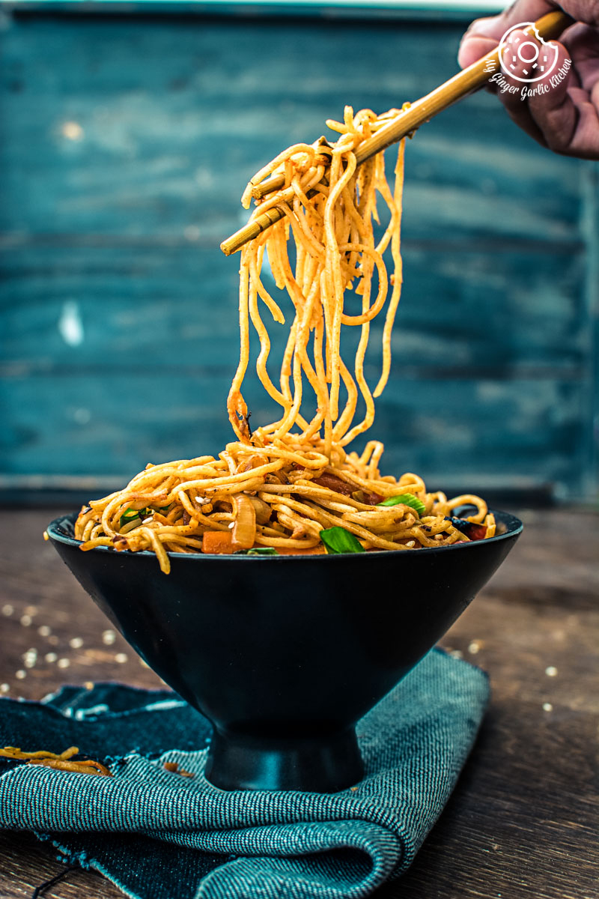

This veg noodles recipe, made with all of your favorite fresh vegetables, is perfect for a quick a weeknight meal! Ready in just 30 minutes, this Chinese-style stir fried veggie noodles is kid-friendly and fully customizable.
Noodles, Spring onion green, Cabbage, Cilantro, Red onion, Carrot, Ginger, Spring onion, Garlie, Bell pepper, Salt, sugar, oil, vinegar, soy sauce, Red chili sauce, Tomato ketchup.
1. firstly, in a large vessel take 6 cup water, 1 tsp salt and 1 tsp oil.
2. once the water comes to a boil place a pack of hakka noodles (125 gm).
3. boil the noodles for 3 minutes or till it turns al dente. refer package instructions to know the exact cooking time.
4. drain off the water from noodles and pour 1 cup of cold water to prevent from further cooking.
5. drizzle 1 tsp oil and mix gently, to avoid noodles from sticking to each other. keep aside.
6. now in a large kadai heat 2 tbsp oil and saute 2 clove garlic, 1 inch ginger and 1 chilli.
7. saute ½ onion, 2 tbsp spring onion on high flame.
8. ffurther add ½ carrot, ¼ green capsicum, 5 snow pea, 5 beans, chopped, ¼ red capsicum and 5 florets broccoli.
9. stir fry on high flame for 2 minutes or until veggies are cooked yet retain their crunch.
10. also add 3 tbsp cabbage and stir fry.
11. further add 2 tbsp tomato sauce, 1 tbsp soy sauce, 1 tbsp vinegar, 1 tbsp chilli sauce, ¼ tsp pepper powder and ½ tsp salt.
12. stir fry until sauces are well combined.
13. add in boiled noodles and mix gently.
14. toss and mix until noodles are cooked completely.
15. finally, garnish with spring onion and enjoy veg noodles.